studio status report: 2026-06
I have not yet released kintespace.com—but shortly after I am done writing this report, it should be released to staging for testing. This was the most lengthy, self-imposed task of my entire adult life. …and, sorry capitalism (and sorry me), this “great work” will not help me “escape democracy” as a multi-billionaire (which, according to a young 50 Cent, means I have wasted my time) ⌛🐇🕳
Now, without spending at least an hour looking through years of notes, I will attempt to list some of the challenges that brought me to this place:
- I had to build a new media player ⌛🐇🕳 before even starting the “normal” Web stuff.
- I had to re-develop my Index concept which was a “distraction” ⌛🐇🕳 away from the “normal” Web stuff.
my Web-based Publications must include a Flash-like media player
I am laboring (alone and pathetically) under the assumption that I can have a “player” based on a single technology that can host interactive experiences, stream audio and stream video. I have decided (even after years of making wrong decisions about this) that this technology is based on WebAssembly. Just for giggles, here were my previous disastrous commitments:
- Windows Help files on a credit-card sized CD-ROM (yes, I am serious about this)
- Macromedia Director on a credit-card sized CD-ROM
- Adobe Flash
- Microsoft Silverlight
Now, in spite of overwhelming evidence that large entertainment companies have already succeeded in placing “creators” like me in an artisinal weirdo micro ghetto getting tinier by the minute, my new WebAssembly initiative is driven by the following (public) projects:
These projects are a fraction of what’s planned. Respectively, we can see that this particular form of torture has been going on since 2022:
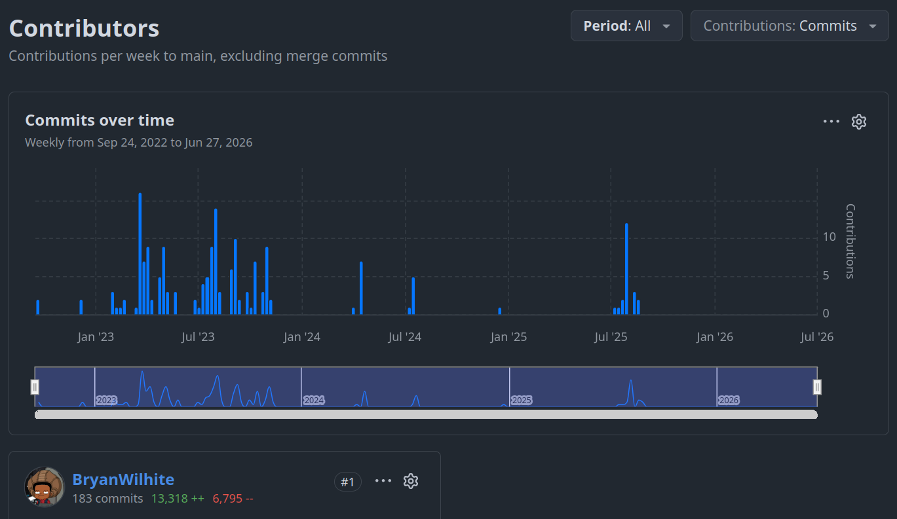
https://github.com/BryanWilhite/Songhay.Player.ProgressiveAudio/graphs/contributors?all=1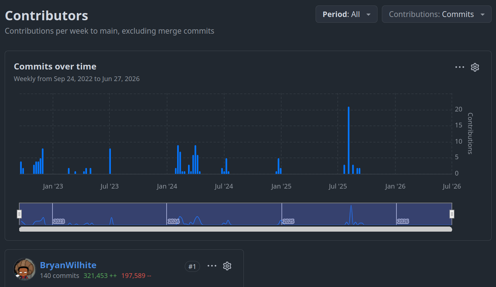
https://github.com/BryanWilhite/Songhay.Player.YouTube/graphs/contributors?all=1The rabbit-hole bottom line is that this media player experience had to be developed before any recognizable Web development could be started—so this massive “diversion” began in 2022. For depressing-but-necessary perspective, we can glance at what the hell I was thinking at the start of 2022.
my Web-based Publications must have a custom Index system
I look forward to using my new Publication system to explain again and again (until I actually like the delivery of the explanation) why an Index system is such big deal for a publication.
From the world of classical print publication, we know that the paper-based index helps us find specific things on a specific page. The classical, Matt Mullenweg, Web 1.0 answer to the paper-based index was a “keyword”-driven (or “tag”-driven) taxonomy. The word taxonomy means building something like an index but not using the exact words found on the page—instead, we have the freedom to use classifying words outside the body of the text.
I have been laboring for years under the assumption that the Mullenwegian “word cloud” of Web 1.0 taxonomy has not been improved upon. Not because people are stupid but because of the dominance of Web 2.0 where the “dark patterns” for publication tools were not there to help individual writers organize and search their written material but to collect data for centralized, corporate world domination. One may want to argue that the search and summarizing abilities of AI tools represent the ultimate improvement to all of this—but I would argue that, to avoid AI-based amnesia, you will have to feed the AI some kind of structured data (that the AI probably built) in order to be productive. That structured data will effectively be “your” Index.
my custom Index has be integrated with traffic stats
Here is a question we can ask a centralized AI product (for “entertainment purposes only”): Do WordPress, Joomla, Drupal, Squarespace, Contentful or any other similar product have analytic features that track the traffic for a single Web page?
Today, AI is telling me that the answer is yes and the leading third-party, plug-in products that provide this are:
- Jetpack Stats
- MonsterInsights
- ExactMetrics
- Google Analytics
And there is even a suggestion that Joomla and Drupal had this built in quite early on 😲 I am actually surprised by this real-world inquiry. However, my inquiry did not include my “peculiar” contraints:
- these products must not be based on PHP
- these products must not require data stored at a third-party location
- these products must be integrated with some kind of information design concept for the entire Web site
my custom Index has to be integrated with information design functionality
My use of the term ‘information design functionality’ functions as an umbrella term that includes the ability to organize your Web Publication into an outline form. I am also talking about generating a table of contents, a site map and/or a global navigation concept.
I started the Songhay.Publications project on GitHub to work through these desires. We can literally see the rabbit holes for this desire spring up right about where I was laid off from my day job of four years:
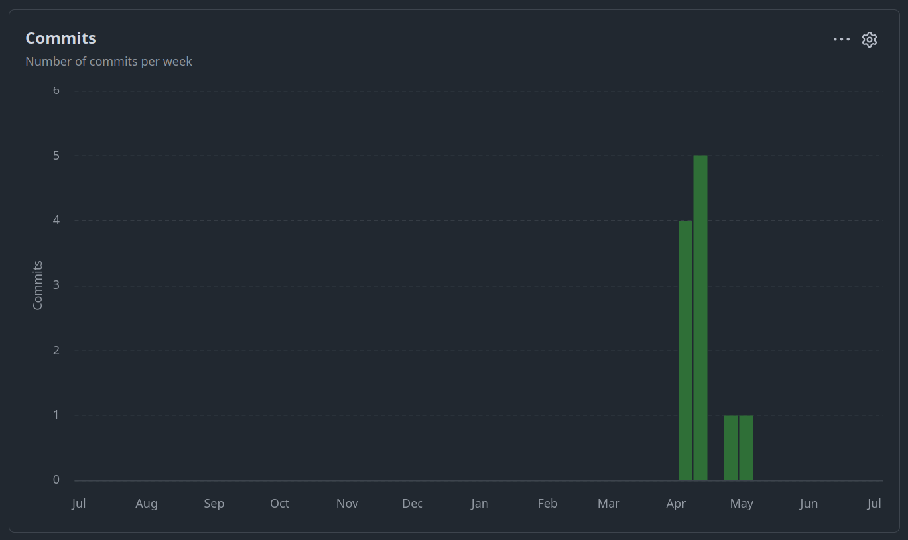
We can look at my entire miserable life with Songhay.Publications, breaking it up into two ‘eras’:
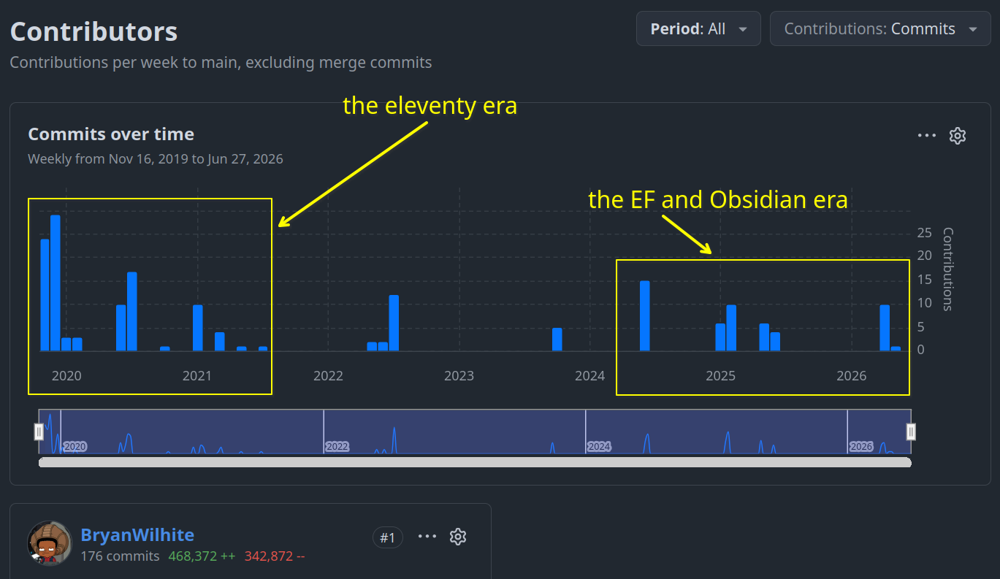
First there was the eleventy honeymoon period where I set up the Blogging system that I am using today (see https://github.com/BryanWilhite/Blog). However, this system paid little attention to my precious Index concept(s). My honeymoon period with Obsidian and my day-job inspired update of my EF skills (with a renewed respect for SQLite) drove me to revisit Songhay.Publications, inaugurating a second ‘era’ of development 🐇🕳
my selected notes of the month
Almost the entire month was dedicated to Internet Products (kintespace.com):
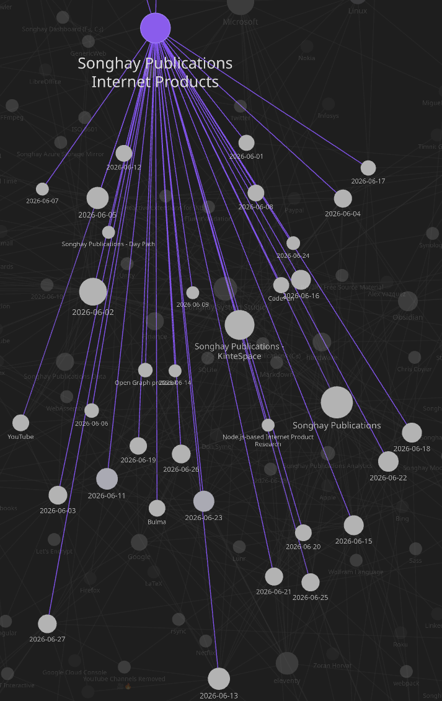
This means there should be fewer notes to show publicly this month:
FluentValidation is preferred over MiniValidation by Damian Edwards…
…because MiniValidation (https://github.com/DamianEdwards/MiniValidation) depends on hard-coded attribute adornment via System.ComponentModel.DataAnnotations:
xUnit.net: my first time testing with reflection 😐🧠🧹
The ToIDocument_Test, currently in the the kinté space repo (but will be moved to Songhay Publications (C♯)), has expected JsonObject property values against actual plain-old .NET object values:
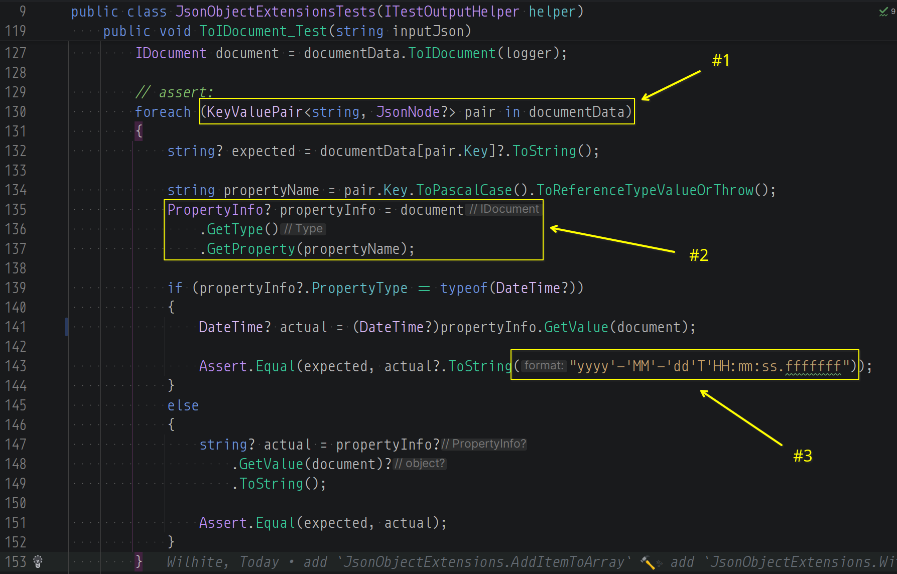
JsonObjectsupports enumeration through its properties by default; when an instance has aGetEumeratormethod that means it can be used inforeach—another ancient fundamental fact about .NET that the dudes with the big bucks probably never forget- remember the
GetType-GetPropertycombo? …what about theGetType-GetProperty-GetValuecombo? BecauseGetValuereturnsobject?we need to stringify withObject.ToStringfor equality testing - testing equality for dates as strings is probably me opening another can of worms 🥫🪱 as I currently do not know exactly what is the date format of JSON dates—and
"yyyy'-'MM'-'dd'T'HH:mm:ss.fffffff"is probably not exactly correct
I used to know this GetType-GetProperty combo by heart over 15 years ago back when it was a novelty:
PropertyInfo? propertyInfo = document
.GetType()
.GetProperty(propertyName);
Internet Products: should IDocument date-time properties always be DateTimeKind.Utc ? 😐🗺
The short answer is yes. Just get on an international flight with your publishing pipeline and think about it 🛫 This person has:
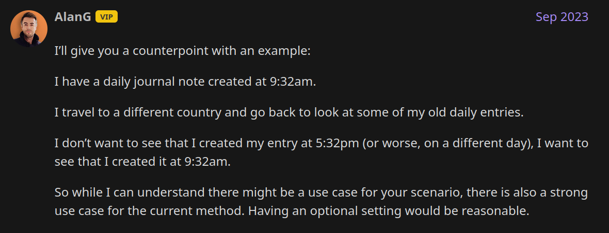
…and, by the way, two important facts:
- SQLite does not support date or time types and stores
DateTimeas a string - Obsidian “just doesn’t seem to know how to correctly process timezone offsets correctly” and the “date picker follows your operating system's default date and time format”
This yes answer means stuff like this:
DateTime actual = DateTime.Parse(input);
…should change to this [📖 docs ]:
DateTime actual = DateTime.Parse(input, CultureInfo.InvariantCulture, DateTimeStyles.AdjustToUniversal);
…actually this DateTime.TryParse angle is more useful:
Assert.True(DateTime.TryParse(expected,
CultureInfo.InvariantCulture,
DateTimeStyles.AdjustToUniversal, out DateTime actual));
FFmpeg: ffmpeg webCLI (WebAssembly) #to-do
A browser-based video editor powered by ffmpeg.wasm. No uploads, no servers -- all processing happens locally in your browser using WebAssembly.
🚀 Live app: https://tejaswigowda.com/ffmpeg-webCLI/
WinUI: Microsoft.UI.Reactor
This appears to be Microsoft’s gigantic answer to what that other guy was doing:
Reactor is not a new UI platform. It is a new way to describe WinUI content. Every control you render is a real WinUI control —
Button,TextBox,NavigationView,TreeView— just authored differently. Apps built with Reactor interop freely with XAML, MVVM, existing controls, and the rest of the WinUI ecosystem.What Reactor adds on top of WinUI:
- A virtual element tree and reconciler that diff old vs. new descriptions and patch only what changed on real WinUI controls
- Hooks-based state (
UseState,UseEffect,UseReducer, …) co-located with render logic- A C# DSL that replaces XAML markup with typed factory methods and fluent modifiers
- Higher-level building blocks — flex layout, charting, commanding, navigation, data grid, theming, localization — many of which are candidates to migrate back into WinUI itself
—https://github.com/microsoft/microsoft-ui-reactor/tree/main
Internet Products: I see where custom messages are needed for FluentValidation 😐✨
A custom message [📖 docs ] must be specified when FluentValidation begins with:
The specified condition was not met
…as seen here:
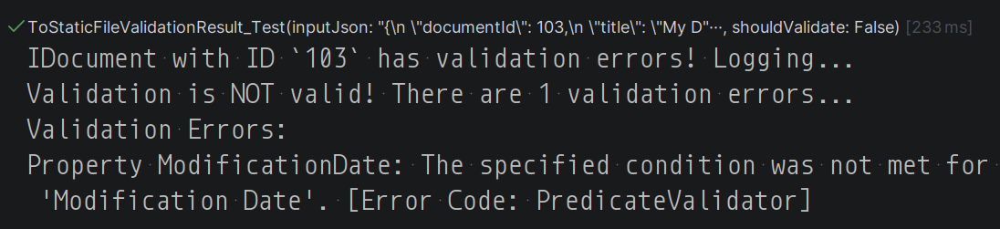
Finance: “This time it’s coming for tech first.”
It’s hard not to enjoy the bitter irony, here. The tech industry once revelled in disruption. Whether it was Uber wiping out the taxi industry, Amazon destroying traditional bookstores, or Spotify wiping out artist revenues, time and time again we’ve seen the Silicon Valley enrich themselves by disrupting an established market and then transforming into rent seekers.
AI now threatens to do the same to countless professions. Everyone from writers to graphic designers to financial analysts can feel the wolf at the door.
But this time things are a little different.
This time it’s coming for tech first.
—“Cannibalism”
Internet Products: the thumb img elements should load lazily 😐 📞🐌🖼
Lazy loading avoids the network and storage bandwidth required to handle the image until it's reasonably certain that it will be needed. This improves the performance in most typical use cases.
While explicit
widthandheightattributes are recommended for all images to avoid layout shift, ==they are especially important for lazy-loaded ones==. Lazy-loaded images will never be loaded if they do not intersect a visible part of an element, even if loading them would change that, because unloaded images have awidthandheightof0. It creates an even more disruptive user experience when the content visible in the viewport reflows in the middle of reading it.Lazy-loaded images located in the visual viewport may not yet be visible when the Window
loadevent is fired. This is because the event is fired based on eager-loaded images — lazy-loaded images are not considered even if they are located within the visual viewport upon initial page load.—https://developer.mozilla.org/en-US/docs/Web/HTML/Reference/Elements/img#lazy
Internet Products: the splash image credits message experience is in place 👏😐
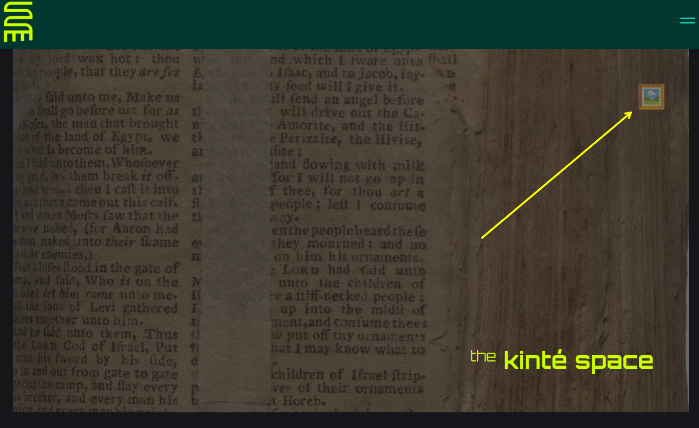
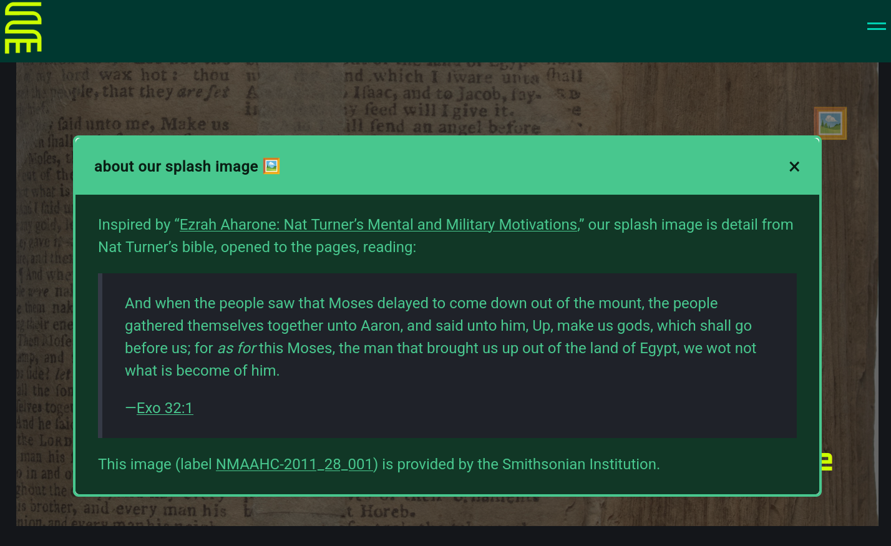
Bing AI: What Is the Best Local LLM for Coding in 2026?
Qwen3-Coder-Next is currently the top local LLM for coding in 2026, offering best-in-class performance on real-world software engineering tasks.
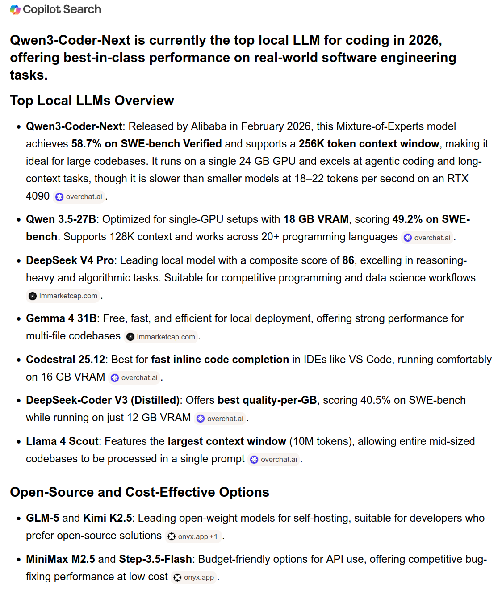
kintespace.com analytics: monthly hits section is complete 👏😐✅
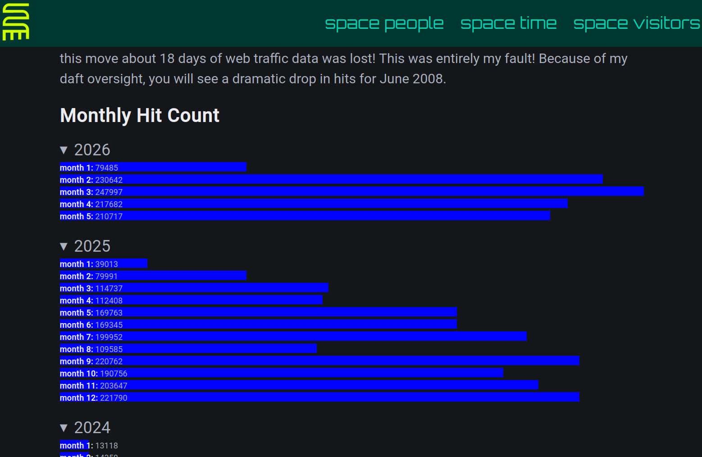
open pull requests on GitHub 🐙🐈
- https://github.com/BryanWilhite/Songhay.HelloWorlds.Activities/pull/14
- https://github.com/BryanWilhite/dotnet-core/pull/67
sketching out development projects

- retire the old
kinte-spacerepo for kintespace.com 🚜🧊 establishDataAccesslogic for Obsidian markdown metadata 🔨✨establishDataAccesslogic for Index data, including adding and removing Obsidian documents (and Segments) 🔨✨- package
DataAccesslogic in*Shellproject fornpmscripting 🚜✨ consider using Lerna to coordinate the two levels ofnpmscripts in the kinté space repo 🧠👟- use a Jupyter Notebook to track finding and changing Amazon links to open source links in the kinté space repo 📓⚙
- use a Jupyter Notebook to convert flickr links to Publications (responsive image) links in the kinté space repo 📓⚙
convert rasx() context repo to the relevant conventions shown in the diagram above 🔨🚜- convert Songhay Day Path Blog repo to the relevant conventions shown in the diagram above 🔨🚜
- re-release Songhay Dashboard by updating its repo to the relevant conventions shown in the diagram above 🔨🚜
- start development of Songhay Publications Index (F♯) experience for WebAssembly 🍱✨
- start development of Songhay Publications - Data Editor to establish a GUI for
*Shelland provide visualizations and interactions for Publications data 🍱✨